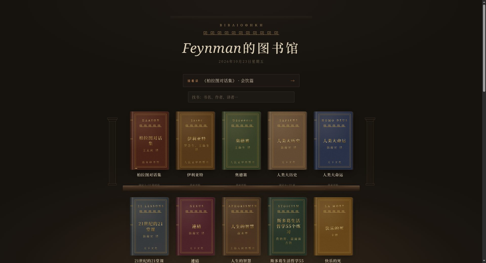
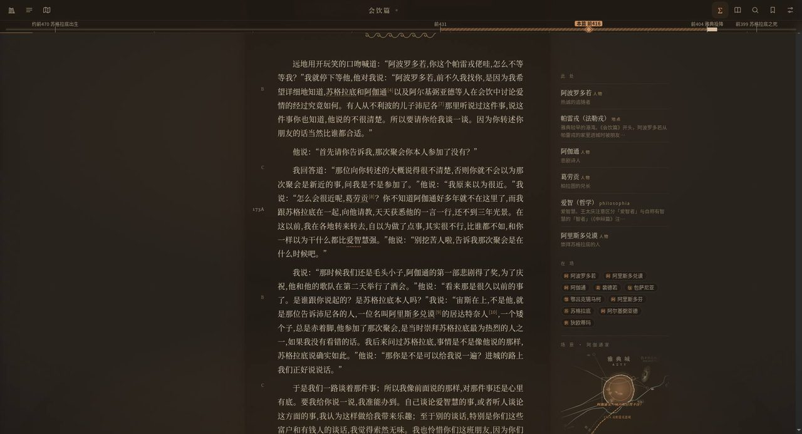
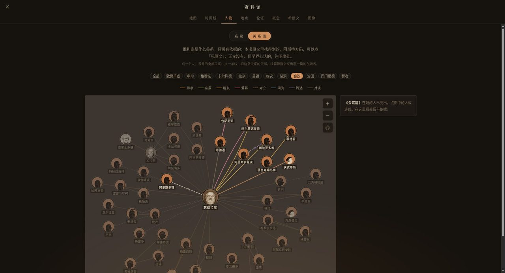

Case · Reader · PWA
Feynman的图书馆
面向深度阅读的古典文本阅读器：布面书架、上下滚动 / 左右翻页、高亮脚注与人物关系图。 线上站点需登录访问；本页用真实界面与功能清单说明产品能力。
具体功能
- 布面书架与续读 书库首页以布面封面陈列书目，并提供「继续阅读」入口回到上次进度。
- 阅读模式切换 支持上下滚动与左右翻页；阅读进度、段落标记与页内导航一并呈现。
- 高亮与脚注 文本可高亮；Stephanus 编码与脚注方便对照古典文献引用。
- 此处 / 在场侧栏 阅读时展开人物、地点与术语卡片，并显示当前在场信息。
- 人物关系图 资料馆按书目筛选人物网络（师承、朋友、对谈等），把文本人物关系可视化。
- 登录访问 · PWA 内容与账号绑定；真机可安装为 PWA。线上需登录，作品集以功能页展示能力。
界面预览




线上阅读站点为登录访问，不开放公开试读链接。若之后有可分享的演示入口，会在本页加上「打开线上版」。
回到精选
打开线上版（需登录）